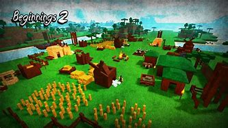
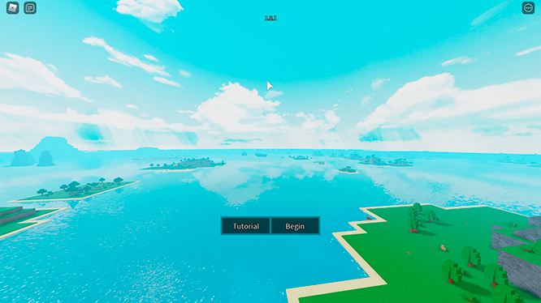
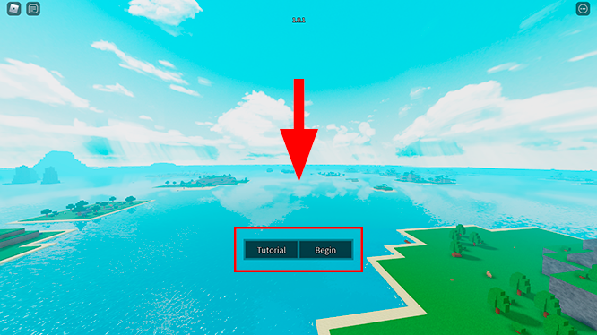

BEGINNINGS - Guia
O que é o Beginnings?
Beginnings é um jogo de aventura de mundo aberto que se encontra na plataforma de jogos Roblox. Neste jogo você tem como principal objetivo sobreviver. E para isto você irá precisar ir atrás de recursos. No beginnings você escolhe seu próprio caminho, então você pode ser um simples fazendeiro ou um explorador ou um lider de uma facção que pode dominar o continente, e entre muitas possibilidades.
O Mapa do jogo é composto por um continente com um oceano cheio de ilhas, algumas grandes, outras pequenas, mas o mapa nunca é o mesmo. Cada servidor tem um mapa diferente, mas em todos eles sempre tem algumas ilhas em comum, Alguns exemplos são os Vulcões, os Desertos e as Ilhas Principais (As maiores ilhas do jogo).
Primeiros passos
Ao entrar no jogo você irá se deparar com uma tela igual a esta.
Você tem duas opções nesta tela, ir para o tutorial clicando no botao "Tutorial", lá você irá aprender um pouco sobre o jogo e isso vai te ajudar muito, pois vai te dar uma base sobre o jogo, ou você pode clicar em "Begin" e começar a jogar o jogo de verdade. Por mais que aqui vai ter um guia sobre o jogo, eu recomendo que você faça o tutorial, para ter certeza que você não irá ficar perdido.
Ao clicar em "Begin" você entrará no mapa do jogo, você irá se deparar com esse monte de coisas na tela, mas não se assuste, você irá aprender tudo rapidinho

Para coletar algum recurso ou pegar algo, você precisa clicar no botão escrito "Interact", ou você pode apertar o número '1' do seu teclado.

Após selecionar o botão "Interact" basta clicar com o botão esquerdo do mouse no objeto que você deseja coletar, mas lembre-se, nem tudo você pode coletar com apenas este botão, as vezes você vai precisar de alguma ferramenta, ou em alguns casos específicos, você não vai poder coletar por que não é um objeto feito para ser coletado.

Após ter coletado o objeto, você pode ver ele em seu inventário apertando o botão "Z", ou clique sobre o icone de mochila do lado do botão "Interact"

Para colocar no chão algum objeto que esteja no seu inventário, você terá que abrir o invetário, selecionar o objeto e mover ele para onde você deseja colocar, depois é só clicar com o botão esquerdo do mouse.

Você também pode plantar algumas coisas, basta ter a fruta ou o vegetal do que você deseja plantar, selecionar ele no inventário e clicar na caixinha que tem o icone de planta, ou você pode apertar a tecla 'F' do seu teclado. Depois é só clicar com o botão esquerdo do mouse.

O botão Interact serve para comer também, basta selecionar ele e clicar com o botão direito em cima da comida que você quer comer.

Você tambem pode comer a comida de outra forma, basta pegar ela, abrir o inventário, selecionar ela no inventário e clicar em "Consume", ou você pode selecionar ela e apertar o botão 'X' do seu teclado.

Agora nós precisamos sair dessa ilha, geralmente você não vai conseguir items fortes na ilha que você nasceu, então você precisa de um barco. Para fazer um barco você precisa pegar três madeiras.

Após ter coletado as três madeiras, aperte o botão 'C' do seu teclado ou clique no icone de ferramenta do lado direito da sua rootbar. Após fazer isso, vai abrir uma janela de craft em cima do mapa que se encontra no canto direito da tela, é ali que você vai fabricar quase todos os seus items.

Após abrir a janela craft você clica no botão "Materials" e depois clica em "Wood hull" e aperte o botão 'X' do seu teclado ou clique em "Craft" para fabricar a "Wood hull".

Depois de ter fabricado a "Wood hull", ainda na tela de craft, clique em "Vehicles" e depois clique em "Raft" e aperte o botão 'X' do seu teclado ou clique em "Craft" para fabricar o "Raft".

Após ter fabricado o "Raft", abra o seu inventário apertando o botão "Z", ou clique sobre o icone de mochila do lado do botão "Interact", e selecione o "Raft".

Agora aponte o "Raft" sobre o mar e clique com o botão esquerdo.

Pronto! Agora você pode explorar o mapa e se divertir, neste guia tem muito mais conteúdo sobre o jogo, mas eu te aconselho a explorar um pouco o mapa sozinho, ai no decorrer do jogo se tiver dúvidas, volte aqui.